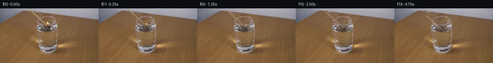

![首帧]()

Round 00
2026-11-05T11:18:12.865315+00:00像素候选变化代码 +204/−0inspection 更新
pixels 8738fbbd6844ce90 · code 0ea48c4dcd7dee1c
查看本轮 generate.py 真实 diff
--- previous/generate.py
+++ current/generate.py
@@ -0,0 +1,204 @@
+"""Deterministic local pixel animation of a match entering water.
+No learned model, renderer, network, or additional scene input is used.
+"""
+from pathlib import Path
+import math
+import cv2
+import numpy as np
+from PIL import Image, ImageDraw
+from scipy.ndimage import gaussian_filter
+from artifact_io import save
+
+ROOT = Path(__file__).resolve().parent
+S = 4
+W, H = 256, 144
+source = np.asarray(Image.open(ROOT / 'first_frame.png').convert('RGB'))
+rng = np.random.default_rng(111)
+
+# A narrow repair mask removes the only moving items in the photograph.
+repair = np.zeros((H, W), np.uint8)
+cv2.line(repair, (73, -2), (122, 43), 255, 4, cv2.LINE_AA)
+cv2.ellipse(repair, (124, 40), (5, 7), 0, 0, 360, 255, -1)
+cv2.line(repair, (122, 46), (132, 54), 255, 5, cv2.LINE_AA)
+plate = cv2.inpaint(source, repair, 3, cv2.INPAINT_TELEA)
+Image.fromarray(plate).save(ROOT / '.tmp' / 'clean_plate.png')
+
+src_hi = cv2.resize(source.astype(np.float32), (W*S,H*S), interpolation=cv2.INTER_CUBIC)
+plate_hi = cv2.resize(plate.astype(np.float32), (W*S,H*S), interpolation=cv2.INTER_CUBIC)
+yy, xx = np.mgrid[0:H*S,0:W*S].astype(np.float32)
+xx = (xx + .5)/S - .5
+yy = (yy + .5)/S - .5
+
+# Keep the original shaft's color and texture within a soft silhouette.
+a = np.array([73.45,-.7],dtype=np.float32)
+b = np.array([121.05,42.2],dtype=np.float32)
+v = b-a
+length = float(np.linalg.norm(v))
+u = v/length
+q = (xx-a[0])*u[0] + (yy-a[1])*u[1]
+p = -(xx-a[0])*u[1] + (yy-a[1])*u[0]
+shaft_alpha = np.clip((1.30-np.abs(p))/.65,0,1) * np.clip((length+.6-q)/1.0,0,1)
+shaft_alpha *= np.clip((q+5)/2,0,1)
+
+# Recover the uninterrupted near rim highlight from neighboring photograph pixels.
+# Its foreground reflection will partially cover the match when it passes behind it.
+rim = np.zeros((H*S,W*S),np.float32)
+rx, ry, cx, cy = 26.0,11.0,121.0,33.0
+ell = ((xx-cx)/rx)**2 + ((yy-cy)/ry)**2
+rim = np.exp(-((np.sqrt(ell)-1)*ry/.36)**2/2)
+rim *= (yy > 37) * (xx > 100) * (xx < 145)
+
+
+def over(arr, color, alpha):
+ alpha = np.clip(alpha,0,1)[...,None]
+ return arr*(1-alpha) + np.asarray(color,dtype=np.float32)*alpha
+
+
+def draw_layer(draw_fn, blur=0):
+ im = Image.new('RGBA',(W*S,H*S))
+ d = ImageDraw.Draw(im)
+ draw_fn(d)
+ ar = np.asarray(im,dtype=np.float32)
+ if blur:
+ ar = gaussian_filter(ar, (blur*S,blur*S,0))
+ return ar
+
+
+def apply_layer(arr, ar, strength=1):
+ return over(arr,ar[:,:,:3],ar[:,:,3]/255*strength)
+
+
+def poly(d, points, color):
+ d.polygon([(round(x*S),round(y*S)) for x,y in points],fill=color)
+
+
+def line(d, points, color, width):
+ d.line([(round(x*S),round(y*S)) for x,y in points],fill=color,width=max(1,round(width*S)))
+
+
+def flame_layer(cx,cy,h,t):
+ flicker = .18*math.sin(t*2.3)+.1*math.cos(t*3.1)
+ lean = .40*math.sin(t*1.7)
+ def paint(d):
+ poly(d,[(cx-1.4,cy),(cx-1.6,cy-h*.35),(cx-1.1+lean,cy-h*.75),
+ (cx-1+lean,cy-h),(cx+.05+lean,cy-h*.9),
+ (cx+.8,cy-h*.52),(cx+1.25,cy-h*.2),(cx+.8,cy+.05)],(255,171,37,238))
+ poly(d,[(cx-1,cy-.3),(cx-1,cy-h*.42),(cx-.7+lean,cy-h*.88),
+ (cx+.20,cy-h*.58),(cx+.75,cy-h*.18),(cx+.45,cy)],(255,224,102,255))
… diff truncated; 117 more lines …